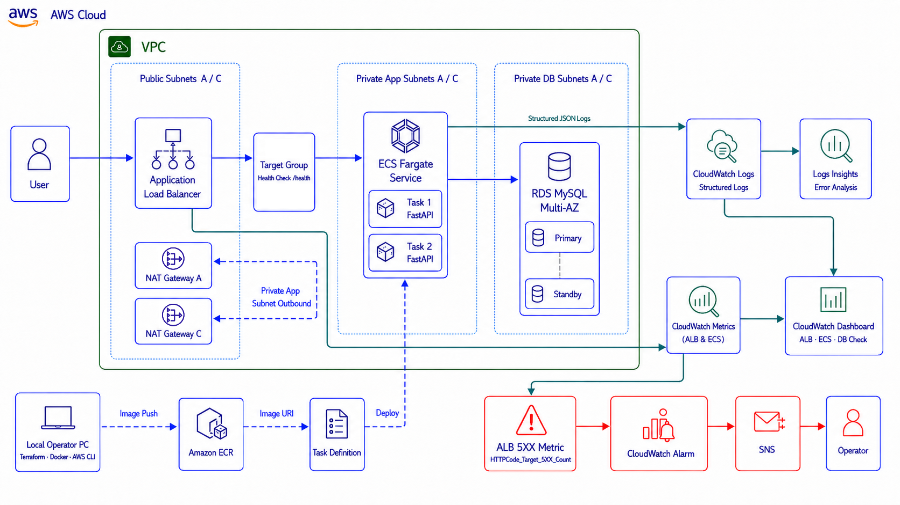

1. 프로젝트를 진행한 이유
ECS Fargate 기반 서비스에서 애플리케이션 로그와 AWS 지표를 함께 확인하는 관측성 운영 흐름을 경험하기 위해 진행했습니다.
정상 요청과 장애 요청을 구분하고, 로그 검색부터 경보·알림·대시보드 확인과 장애 복구까지 연결하는 것을 목표로 했습니다.
2. 전체 아키텍처

3. 사용한 기술과 선택 이유
- ECS Fargate / ECR — FastAPI 애플리케이션을 컨테이너 이미지로 배포하고 Task를 운영합니다.
- Application Load Balancer / Target Group — 요청을 두 개의 ECS Task로 전달하고 상태를 확인합니다.
- RDS MySQL Multi-AZ — Private Subnet에서 애플리케이션의 DB 연결을 구성합니다.
- CloudWatch Logs / Logs Insights — JSON 로그를 수집하고 500 오류를 조건 검색합니다.
- CloudWatch Alarm / SNS — ALB Target 5xx 오류를 감지하고 알림을 전달합니다.
- CloudWatch Dashboard / Terraform — 서비스 지표를 한 화면에 표시하고 인프라를 코드로 관리합니다.
4. 구현 흐름
- ALB와 Target Group을 통해 ECS Fargate의 FastAPI 서비스로 요청을 전달합니다.
- ECS Task에서 Private Subnet의 RDS MySQL Multi-AZ로 연결합니다.
- FastAPI가 trace_id, path, status, duration_ms를 포함한 JSON 로그를 생성합니다.
- CloudWatch Logs가 애플리케이션 로그를 수집하고 Logs Insights가 장애 로그를 검색합니다.
- ALB Target 5xx 지표가 임계값을 넘으면 CloudWatch Alarm과 SNS가 알림을 전달합니다.
- Dashboard에서 요청 수, 응답 시간, ECS 사용률과 DB Check 결과를 확인합니다.
5. 테스트 결과
- ECS Task 2개와 Target Group의 Healthy 상태를 확인했습니다.
- 정상 요청과 의도적인 500 오류 요청의 JSON 로그를 확인했습니다.
- Logs Insights에서 status가 500 이상인 로그를 조건 검색했습니다.
- ALB Target 5xx Alarm의 경보 상태 전환과 SNS 연동을 확인했습니다.
- Dashboard에서 ALB 요청 수, 응답 시간, ECS 상태와 DB Check 결과를 확인했습니다.
6. 트러블슈팅
RDS 연결 요청에서 500 오류 발생
CloudWatch Logs의 오류 메시지를 통해 MySQL 인증에 필요한 cryptography 패키지가 Docker 이미지에 포함되지 않은 것을 확인했습니다. requirements.txt를 수정하고 이미지를 다시 빌드해 ECR에 Push한 뒤 ECS를 강제 재배포하여 연결을 복구했습니다.
RDS 지표가 Dashboard에 명확하게 표시되지 않음
짧은 실습 트래픽에서는 RDS 리소스 지표가 뚜렷하지 않아, /api/db-check 로그를 기반으로 연결 성공 횟수와 응답 시간을 확인하는 위젯으로 변경했습니다.
7. 보안·비용·운영 관점에서 신경 쓴 점
- ECS Task와 RDS를 Private Subnet에 배치하고 RDS의 Public Access를 비활성화했습니다.
- RDS 접근은 ECS Security Group에서만 허용했습니다.
- DB 비밀번호와 Terraform 상태 파일이 저장소에 포함되지 않도록 관리했습니다.
- 실습 종료 후 Terraform으로 과금 가능 리소스를 삭제했습니다.
8. 프로젝트를 통해 배운 점
운영 관측성은 지표를 모으는 것만이 아니라 요청 단위 로그, 오류 검색, 경보, 알림과 대시보드를 연결해 장애 위치와 원인을 좁히는 과정임을 확인했습니다. 실제 오류 메시지를 근거로 애플리케이션 이미지를 수정하고 재배포하는 복구 흐름도 경험했습니다.
9. 향후 개선 방향
- Grafana Cloud 또는 Amazon Managed Grafana를 연동합니다.
- CloudWatch Dashboard와 Grafana Dashboard를 비교합니다.
- k6 스크립트 기반 부하 테스트를 자동화합니다.
- OpenSearch를 활용해 로그 검색 구조를 확장합니다.